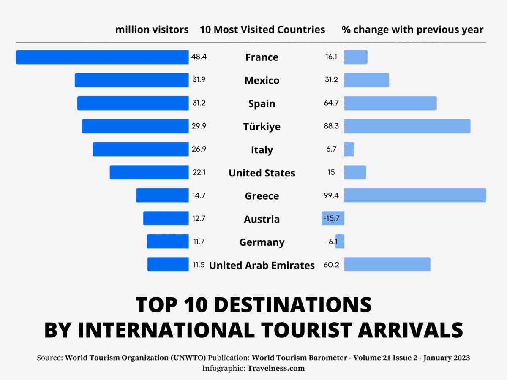
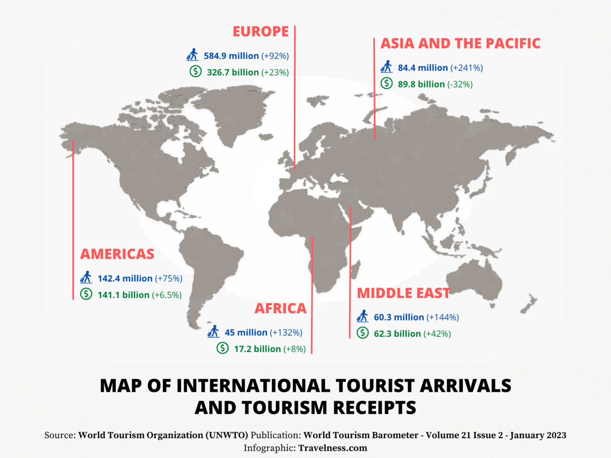

10 Most Visited Countries in the World
By Feross Bessadeg Updated on March 3, 2023
In a time where travel bloggers and international travelers flood our social media feeds with incredible tales of their holidays, you can’t help but wonder just what is the most visited country in the world. Which stunning scenery do we need to see? Where do we pin on the world map next? What are the top travel destinations?
The tourism industry has had rollercoaster years between 2020 and 2022. Despite the Covid-19 pandemic taking its toll on the sector, international tourism was able to recover 63% of pre-pandemic levels.
According to the World Tourism Organization’s publication “World Tourism Barometer“, a total of 917 million international tourists traveled the world in 2022, aspiring adventurers and globetrotters have proven themselves to be resilient and resourceful. The subsequent pent-up demand, coupled with an easing of travel restrictions, led to a 102% increase in the international tourism compared to 2021.
While not yet achieving pre-pandemic levels, this is considered a notable recovery and one which bodes well for 2023 as it sets out to consolidate its comeback.
It’s time to grab your passport and explore the world again!Here are the 10 most visited countries in the world, according to the last issue of the UNWTO World Tourism Barometer – January 2023
[source]:
- France:48.4 million visitors
- Mexico:31.9 million visitors
- Spain:31.2 million visitors
- Türkiye:29.9 million visitors
- Italy:26.9 million visitors
- United States:22.1 million visitors
- Greece:14.7 million visitors
- Austria:12.7 million visitors
- Germany:11.7 million visitors
- United Arab Emirates:11.5 million visitors
Most of these countries saw an increase in tourist arrival compared to the previous year, the exceptions being Austria and Germany.
International tourism saw a strong recovery in 2022, with Europe and the Americas leading the way.
Europe recorded 585 million international tourist arrivals in 2022, reaching nearly 80% of pre-pandemic levels (-21% over 2019), which makes it the world’s largest destination region and home to the most famous country in the world (more on that later).
The Middle East enjoyed the strongest relative increase across regions in 2022 with arrivals climbing to 83% of pre-pandemic numbers (-17% versus 2019).
Africa and the Americas both recovered about 65% of its pre-pandemic visitors, while Asia and the Pacific reached only 23%, as a result of stronger pandemic-related restrictions.
By subregions, Western Europe (87%) and the Caribbean (84%) came closest to their pre-pandemic levels.
The recovery was uneven across regions, with Europe and the Middle East outperforming the other regions due to their more successful implementation of coordinated travel measures. The recovery is expected to consolidate in 2023, with pent-up demand particularly in Asia and the Pacific, as destinations and markets open up.
Below more data and details about the top 10 tourist countries in the world.
Top 10 Most Visited Countries in the World
If you’re looking to update your destinations bucket list, look no further than the following countries. Make your next vacation days count by leaping between these lily pads of diverse terrains and rich histories.
1. France: 48.4 Million Visitors
France is the most visited country in the world with a record breaking of 48.4 million visitors in 2022!
Patched up with idyllic villages and romantic cities, France wears its culture in both iconic landmarks and ordinary settings. Few have the audacity to gild everything in gold, but the country’s noble castles, villas and cathedrals pull off ostentatious decor with a nonchalance attributed to its long centuries of royal history.

As if to match, the village-square markets, café terraces, and the daily rituals of a coffee and croissant presents a genteel sort of luxury. Don’t overlook its outdoors either; the lyrical forests of Corsica and the warm waters of the French Riviera are well-sought retreats for city-dwellers.
France’s reputation as the most popular country in the world is not only due to its stunning architecture and picturesque scenery but also its exquisite cuisine. French cuisine is renowned worldwide for its unique flavors, techniques, and presentation, and travelers flock to France to indulge in the country’s culinary delights.
From Michelin-starred restaurants to cozy cafes, France delicacies make it a top destination for foodies and travelers alike.
Attractions:
- Eiffel Tower
- Palace of Versailles
- French Riviera
- Chamonix
- Mont St-Michel
- Paris Bridges